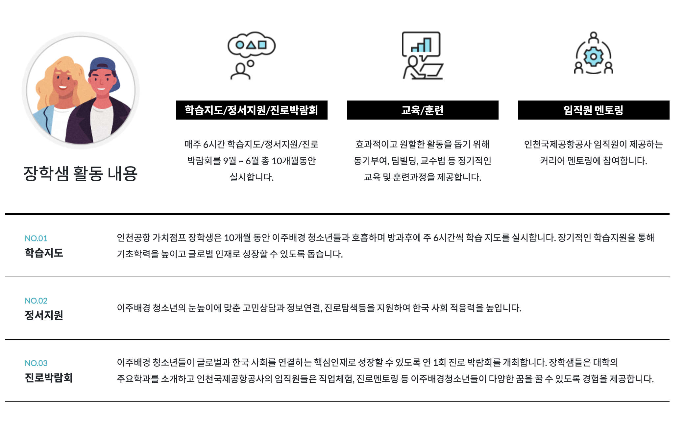

٩(๑❛ᴗ❛๑)۶
#KB polaris
#삼성 희망공부방
#인천공항 가치점프
#신세계I&C 리테일테크 코딩교실
- 신세계I&C 코딩교실이란?
- 활동기간
- 활동내용
- 활동소감
1. 신세계I&C 코딩교실이란?
신세계I&C 코딩교실에서 중고등학생을 대상으로 아두이노를 이용한 코딩교육을 진행하였습니다.

2. 활동기간
충북 형석중학교 : 2020/11/09 - 2020/11/12
김포 : 코로나로 인해 잠정적으로 연기됨
3. 활동내용
아이들에게 코딩교육을 해주기 위해 2020/10/31, 2020/11/7 총 2주에 걸쳐 사전교육을 받았습니다.

사전교육에서는 아두이노에 대해서 배웠고, 아두이노를 아이들에게 어떤 식으로 설명해야 할 지 배웠습니다.
활동 전에 아두이노를 접해본 적이 있었지만 아이들에게 설명해주는 것은 처음이었기 때문에 매우 색다른 경험이었습니다.
2020년 11월 09일부터 2020년 11월 12일까지 형석중학교에서 아두이노 교육을 하였습니다.
그 중 저는 첫째날과 넷째날 메인 강사를 맡아 이론 설명, 아두이노 실습 설명 및 진행을 담당했습니다.
4. 활동소감
저는 고등학생때부터 멘토링을 진행해왔습니다. 멘토링은 멘티에게 도움을 주고, 저 역시 성장할 수 있다는 게 매우 매력적이었기 때문입니다.
성인이 되고도 다양한 멘토링을 진행했지만, 코딩과 관련된 활동은 해본 적이 없었습니다. 그래서 코딩과 관련된 멘토링에 지원하였고, 신세계I&C 리테일테크 코딩교실에서 대학생 강사를 하게 되었습니다.
저는 코딩을 처음 접해 보거나 제대로 접해본 적이 없는 아이들에게 코딩에 대한 좋은 인상을 심어주고 싶었습니다.
그래서 최대한 다양한 비유를 들어 설명하였습니다. 또, 아이들이 수업에 집중할 수 있게 개인적으로 많은 시각자료를 준비해갔습니다.
컴퓨터 공학과로 전과를 하고, 누군가에게 전공자가 되어 코딩을 설명한다는 것은 매우 가슴벅찬 일이었습니다.
4일간의 형석중학교에서의 수업이 끝나고 아이들이 제 블로그를 찾아와서 댓글을 달아주었는데, 아이들이 수업이 재밌었다고 해줘서 너무 행복했습니다.
저는 이 뜻깊은 경험을 바탕으로 앞으로도 코딩과 관련된 교육활동을 진행하겠다는 생각을 하였습니다.